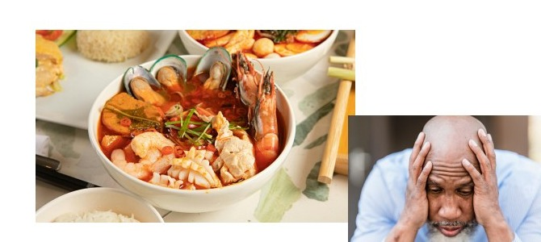
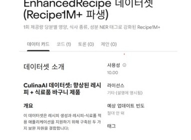
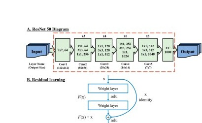
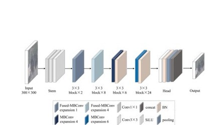
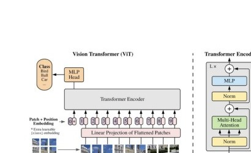
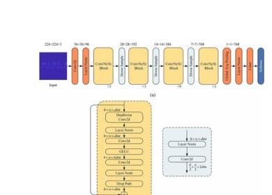
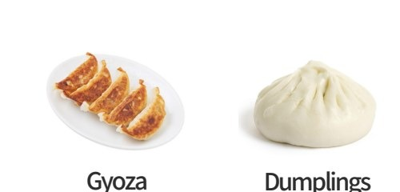

문제 정의 — 보이지 않는 알레르기


메뉴판은 못 읽고, 이름도 모르고,
재료는 사진에 보이지 않는다.
찍먹은 한국인을 위해 법정 알레르기 19가지 + 나트륨을
사진 한 장으로 알려 준다.
서비스 사용 흐름
① 내 알레르기
고른 항목은 다음에도 기억해 둘게요.
3개 선택됨: 땅콩, 밀, 새우
② 음식 사진
JPG, PNG · 10MB까지
② 음식 사진
음식이 화면 가운데 크게 나오게 찍어 주세요.
 다시 고르기
다시 고르기이 음식은
Pad Thai
사진 AI가 확실하게 알아본 음식이에요
높음
1인분 기준 (레시피 중앙값)
그 밖에 자주 들어가는 재료 알류
근거 레시피 통계 · 레시피 328개
어떻게 판단했나요
팟타이 레시피 328개 중 84%에 땅콩이 들어가요. 소스에 쓰는 간장·국수에서 밀(54%), 건새우·새우(43%)도 자주 나와요. 알레르기가 심하면 가게에 꼭 확인하세요.
레시피 통계로 추정한 결과예요.
알레르기가 심하면 꼭 가게에 확인하세요.
데이터 및 전처리

음식 이름을 배우는 데 사용
Bossard et al., ECCV 2014 · ETH Zürich

사진에 안 보이는 재료를 알려 줌 Kaggle (shlokpatel0812)
Kaggle (shlokpatel0812)
| EDA에서 찾은 문제 | 정리 | 결과 |
|---|---|---|
| 음식이 아닌 흑백 사진 (배트맨·깨진 유리) | 삭제 | 101,000 → 100,997장 |
| 계산 못 한 영양값 · 나트륨 이상값 | 신뢰도 낮은 값 제외 · 9,500mg 이상 제외 | 1,023,489 → 1,011,483개 |
| 이름만 같은 다른 요리 ("Ramen Salad") | 규칙으로 제외 | 131,865 → 117,224개 |
| 요약 재료(NER)가 알레르기 재료를 1~9% 놓침 | 재료 원문으로 판별 | ingredients 사용 |
전체 구조
 음식 사진
음식 사진19가지 체크리스트레시피 중 몇 %에 들어가나
분류 모델 선정 — ConvNeXt

ResNet ·  2016
2016

EfficientNetV2 ·  2021
2021

ViT ·  2021
2021

ConvNeXt ·  2022
2022

비슷한 음식(교자 vs 만두)을 가르려면 세밀한 무늬를 잘 봐야 한다 → 같은 시험지에서 가장 높았던 ConvNeXt
model = timm.create_model('convnext_base.fb_in22k_ft_in1k', num_classes=101) # 1,000종 → 음식 101종 model.load_state_dict(best) # 모든 층을 Food-101로 다시 학습한 가중치
분류 모델의 한계 — 학습 범위 밖 음식

소바(메밀국수)는
메뉴 101개에 없다.
메뉴 AI만 있었다면
"라멘 97%" → 라멘으로 판정
→ 메밀을 놓친다
이 음식은
Ramen 또는 Soba
사진 AI 후보와 비슷한 레시피 검색을 함께 보고 위험한 쪽으로 판정했어요
어떻게 판단했나요
후보 음식이 여러 개라 칼로리·나트륨은 보여 드리지 않아요.
① 메뉴 외운 AI "라멘 97%"
② 레시피 찾는 AI "소바 레시피가 대부분"
→ 둘이 다르면 위험한 쪽으로 합쳐
메밀 주의
두 번째 AI가 어떻게 레시피를 찾는지 → 다음 장
검색 모델 선정 — CLIP

사진과 글을 같은 자리에 놓도록 배운 AI
학습은 그대로 두고, 우리 레시피 중 가장 비슷한 30개를 찾는 데만 쓴다

Buckwheat Noodle Salad
Zaru Soba …비슷한 레시피 30개
def search_recipes(image, k=30): sim = image_embedding(image) @ text_vectors.T # 사진 vs 레시피 글 3.5만 개 scores, ids = sim.topk(k) # 가장 비슷한 30개 return index_meta.iloc[ids] # → 재료로 알레르기 비율
코드 ② 분류 예측 · 확신도별 분기
@torch.no_grad() def predict(image, k=3): x = eval_tf(image.convert('RGB')).unsqueeze(0) prob = model(x).softmax(dim=1)[0] # 101종 확률 p, idx = prob.topk(k) # 상위 3개 return [(CLASSES[i], v) for i, v in zip(idx, p)] # 앱에서 (4장): 보정한 1등 확률이 # 0.95 이상 → 1등 음식으로 판단 # 0.6 ~ 0.95 → 상위 3개를 함께 고려 # 0.6 미만 → CLIP 레시피 검색으로

쌀국수 65% · 밀 낮음

라멘 30% · 밀 높음
95% 미만이라 후보 3개를 함께 본다 → 더 위험한 쪽으로
→ 라멘의 밀까지 경고
코드 ③ CLIP 레시피 검색
clip = CLIPModel.from_pretrained(
'openai/clip-vit-base-patch32') # 추가 학습 없음
def image_embedding(image): # 사진 → 숫자 줄
pooled = clip.vision_model(pixel_values=pixels).pooler_output
return F.normalize(clip.visual_projection(pooled), dim=-1)
# 레시피 글 35,184개는 미리 숫자 줄로 (앱과 같은 파일)
text_vectors = np.load('clip_base/index_emb.npy')
assert len(index_meta) == len(text_vectors)
CLIP 소바 레시피 다수
→ 메밀 주의
확률만으로는 처음 보는 음식을 못 거른다 (AUROC 0.86~0.88)
→ CLIP 검색을 늘 함께 본다
결과 ① LLM 직접 판정 대비
찍먹 체크리스트
 생성형 AI에 직접 질문
생성형 AI에 직접 질문
FNR(주의놓침률) — 정답이 주의인 항목 중 놓친 비율
팟타이 → 밀 놓침

카르보나라 → 돼지고기 놓침
3번 물어도 똑같이 놓쳤다. 체크리스트는 근거("재료에 soy sauce")가 남는다.
오류 분석 (주의놓침 617 → 81)

① 카오소이
치킨 커리로 착각(61%)
→ 애매하면 CLIP도 같이 본다

② 소바
라멘으로 확신(97%)
→ 확신해도 CLIP 확인 (코드 ③)

③ 바클라바 · 티라미수
밀을 놓침 → 체크리스트에
필로 반죽 · 레이디핑거가 없었음
'밀': ('wheat|flour|bread|pasta|noodle|soy sauce' '|phyllo|ladyfinger|pastry|dough|crust ...', # ← 추가 'rice flour|rice noodle|corn tortilla ...') # 제외: 쌀가루 등
역할 분담
박중현
레시피 찾는 AI (CLIP 1·2차)
두 AI 연결 · 판정 흐름
발표 자료
주한솔
메뉴 외운 AI
(ConvNeXt 학습 · 실험 4회)
김유라
생성형 AI 연결 · 앱 배포
CLIP 3차 실험
서준영
정답지 · 평가
앱 화면